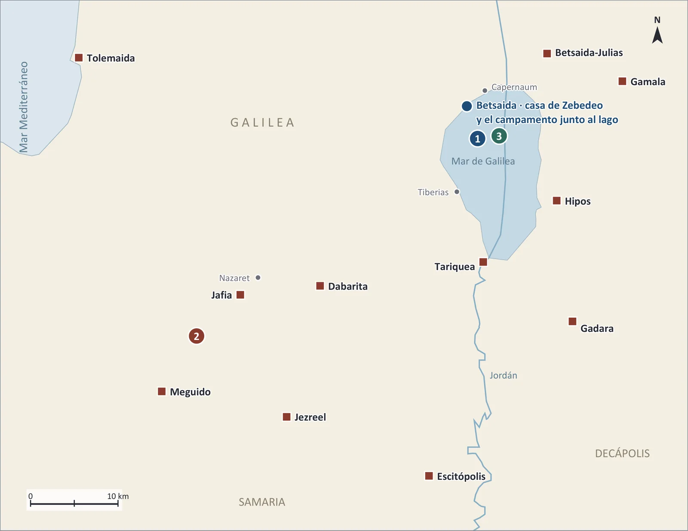
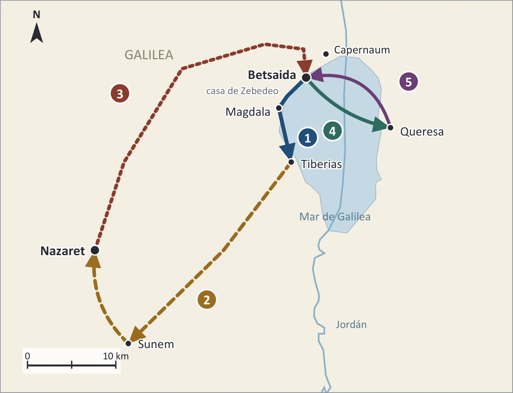

Parte IV Se despliega el ministerio público
Documentos 148–151
Documento 148La Capacitación de los Evangelistas en Betsaidamayo – octubre de 28 d. de J.C.
| Acontecimiento | El libro de Urantia | Biblia |
|---|---|---|
| Mapa 25El campamento de Zebedeo y la segunda gira de predicación por Galileamayo – diciembre de 28 d. de J.C. | ||
| (Introducción)Mapa 25-① La casa de Zebedeo y el campamento junto al lago | 148:0.1–5 | Ninguno |
| Del 3 de mayo al 3 de octubre del año 28 d. de J.C., Jesús y los apóstoles residieron en la casa de Zebedeo en Betsaida. Junto al lago funcionaba, bajo la dirección de David Zebedeo, un campamento de tiendas que albergaba de quinientas a mil quinientas personas, mientras que Pedro tenía a su cargo toda la escuela de evangelistas. | ||
| 1. Una Nueva Escuela de Profetas | 148:1.1–4 | Ninguno |
| Pedro, Santiago y Andrés evaluaban a los que solicitaban ingreso en la escuela de evangelistas, y por la tarde los alumnos enseñaban a la gente junto al lago lo que habían aprendido por la mañana. Cada apóstol enseñaba su propia visión del evangelio, y los más de cien evangelistas formados allí proporcionaron más tarde el material para elegir a los setenta. | ||
| 2. El Hospital de Betsaida | 148:2.1–5 | Ninguno |
| Elman, el médico sirio, asistido por veinticinco mujeres jóvenes y doce hombres, dirigió durante cuatro meses el primer hospital del reino. Jesús visitaba a los enfermos por lo menos tres veces por semana; sin embargo, entre los mil que se recuperaron allí no se realizó ni un solo milagro sobrenatural. | ||
| 3. Los Asuntos del Padre | 148:3.1–5 | Ninguno |
| Durante este período Jesús se iba a menudo a las colinas con sólo dos apóstoles y permanecía mucho tiempo solo, diciendo que estaba «ocupado en los asuntos del Padre». Los narradores deducen que en esos períodos de soledad dirigía a muchos de sus principales directores de los asuntos del universo. | ||
| 4. El Mal, el Pecado y la Iniquidad | 148:4.1–11 | Ninguno |
| En una conversación privada en el jardín de Zebedeo, Tomás preguntó acerca del mal, y Jesús distinguió el mal, el pecado y la iniquidad según el grado de transgresión de la voluntad del Padre. Enseñó que el hombre no es un ser caído sino un ser que asciende hacia Dios, y que estar expuesto al mal no hace de uno un pecador. | ||
| 5. El Propósito de la Aflicción | 148:5.1–5 | Ninguno |
| Cuando Natanael preguntó por qué el Padre permite que sus hijos sufran, Jesús explicó que unos traidores rebeldes habían trastornado el orden natural de este mundo. El Padre no aflige deliberadamente a sus hijos, enseñó, y gran parte de la aflicción es producida por el pecado y la iniquidad. | ||
| 6. La Interpretación Errónea del Sufrimiento —El Discurso Sobre Job | 148:6.1–12 | Ninguno |
| Esa misma noche Juan preguntó por qué sufren los inocentes, y Jesús expuso la historia de Job, señalando las ideas erróneas sobre Dios que tenían sus tres amigos. El sufrimiento humano no es una visitación del juicio divino, dijo, y Job encontró por la fe a un Dios de consuelo y de salvación. | ||
| 7. El Hombre de la Mano Seca | 148:7.1–4 | Mt 12:9-14; Mr 3:1-6; Lc 6:6-11 |
| El penúltimo sábado antes de la segunda gira de predicación, Jesús habló en la sinagoga de Capernaum y luego sanó a un hombre de mano seca que el jefe de los espías fariseos le había enviado. Fue su primer milagro en respuesta al desafío de sus enemigos; los fariseos fueron a ver a Herodes en Tiberias, pero Herodes se negó a actuar.Difiere de la BibliaLos Evangelios dicen que los fariseos se confabularon para destruir a Jesús, mientras que El libro de Urantia añade que el jefe de los espías indujo al hombre a venir, que Herodes se negó a actuar y que el hombre era albañil. | ||
| 8. Última Semana en Betsaida | 148:8.1–5 | Ninguno |
| En la última semana en Betsaida, Abraham, un joven miembro del sanedrín, fue bautizado por Abner, lo que conmocionó a Jerusalén. Quirmet, un profeta de trances de Bagdad, perturbó el campamento, y Abraham entregó todos sus bienes terrenales a la tesorería apostólica, lo que ayudó a enviar a los evangelistas. | ||
| 9. La Curación del Paralítico | 148:9.1–4 | Mt 9:1-8; Mr 2:1-12; Lc 5:17-26 |
| El viernes 1 de octubre por la tarde, durante una reunión en la sala delantera de la casa de Zebedeo, sus amigos bajaron con cuerdas a un paralítico de Capernaum a través de las tejas del techo. Jesús declaró que sus pecados estaban perdonados y le ordenó levantarse y andar, y tres de los espías creyeron y fueron bautizados por Pedro.Difiere de la BibliaLos Evangelios sitúan esto en una casa de Capernaum (Mateo, «su ciudad»), mientras que El libro de Urantia lo sitúa en la casa de Zebedeo en Betsaida y añade que tres espías de Jerusalén fueron bautizados después. | ||
Mapa 25El campamento de Zebedeo y la segunda gira de predicación por Galilea
mayo – diciembre de 28 d. de J.C. · Documentos 148–149

- ①La casa de Zebedeo y el campamento junto al lagoDel 3 de mayo al 3 de octubre del año 28 d. de J.C., Jesús y los apóstoles residieron en la casa de Zebedeo en Betsaida. La ciudad de tiendas junto al lago contaba de quinientas a mil quinientas personas; allí se reunía la escuela de evangelistas, y a poca distancia al sur del campamento se encontraba la enfermería de Elman. [148:0.1; 148:1.1; 148:2.1]
- ②La segunda gira de predicación pública por GalileaDel domingo 3 de octubre al 30 de diciembre. Los doce apóstoles y el cuerpo recién reclutado de 117 evangelistas trabajaron en grupos, mientras Jesús, con Santiago y Juan, visitaba a menudo dos ciudades en un mismo día para alentarlos. Los cuadrados señalan las ciudades que nombra el texto; no da el orden ni la ruta. [149:0.1–3]
- ③Reunión en la casa de ZebedeoDavid Zebedeo mantenía el cuartel general en Betsaida y enviaba mensajeros. Para la hora de la cena del lluvioso jueves 30 de diciembre, todos los apóstoles y evangelistas habían llegado a la casa de Zebedeo. [149:0.4; 149:7.1]
Documento 149La Segunda Gira de Predicaciónoctubre – diciembre de 28 d. de J.C.
| Acontecimiento | El libro de Urantia | Biblia |
|---|---|---|
| (Introducción)Mapa 25-② La segunda gira de predicación pública por GalileaMapa 25-③ Reunión en la casa de Zebedeo | 149:0.1–4 | Ninguno |
| La segunda gira de predicación pública por Galilea comenzó el domingo 3 de octubre del año 28 d. de J.C. y terminó el 30 de diciembre. Jesús llevó consigo sólo a Santiago y a Juan y supervisó a los 117 nuevos evangelistas, mientras David Zebedeo mantenía en Betsaida el cuartel general de su servicio de mensajeros. | ||
| 1. La Propagación de la Fama de Jesús | 149:1.1–9 | Mt 4:23-25; 12:15-21; Mr 3:7-12; Lc 6:17-19 |
| Cuando se levantó el campamento de Betsaida, la fama de Jesús como sanador se había extendido por toda Palestina y Siria. En esta gira no realizó deliberadamente ningún milagro; sin embargo, más de cien personas fueron sanadas sin que él lo supiera, lo que los narradores atribuyen a la acción conjunta de la fe, su compasión y la voluntad del Padre.Difiere de la BibliaLos Evangelios dicen que Jesús sanó a todos los enfermos, mientras que El libro de Urantia explica que en esta gira no sanó intencionalmente, y que las curaciones se produjeron por la fe sin que Jesús tuviera conciencia de ellas. | ||
| 2. La Actitud de la Gente | 149:2.1–14 | Ninguno |
| El narrador señala cómo las enseñanzas de Jesús quedaron más tarde recubiertas por la doctrina de la expiación y por una teología centrada en su persona. Jesús estaba libre de superstición, designó a mujeres como maestras del evangelio y, como evolucionista progresivo más que como revolucionario militante, se ganó la confianza y el amor de la gente. | ||
| 3. La Hostilidad de los Líderes Religiosos | 149:3.1–3 | Ninguno |
| La gente común acogía a Jesús, pero los dirigentes religiosos de Jerusalén se volvieron más hostiles después de la conversión de Abraham y la deserción de los tres espías. Los fariseos tenían una teología sistemática, mientras que Jesús enseñaba por medio de parábolas, y desde entonces los dirigentes nunca dejaron de conspirar para darle muerte. | ||
| 4. El Progreso de la Gira de Predicación | 149:4.1–6 | Ninguno |
| Durante la gira Jesús dio clases vespertinas a los creyentes en muchas localidades. Cuando un joven evangelista le preguntó acerca de la ira, la llamó una señal de que la naturaleza espiritual no ha logrado controlar la mente y el cuerpo, y enseñó el carácter equilibrado, mostrando que las virtudes llevadas al extremo se convierten en vicios. | ||
| 5. La Lección Sobre el Contentamiento | 149:5.1–5 | Ninguno |
| En una conferencia vespertina de los evangelistas bajo la dirección de Simón Zelote, Simón preguntó acerca del contentamiento. Jesús enseñó que la felicidad depende en gran medida de la disposición de uno a dejarse guiar por el espíritu interior, y los exhortó a buscar la certeza de la fe y las seguridades de la filiación divina. | ||
| 6. El «Temor al Señor» | 149:6.1–12 | Ninguno |
| En una conferencia vespertina en Gamala, Felipe preguntó cómo armonizar el llamado de la Escritura a temer al Señor con la enseñanza de Jesús. Jesús dijo que los hombres deben avanzar del temor, pasando por la reverencia, hasta el amor, adorando a Dios no como a un rey poderoso al que hay que temer, sino como a un Padre misericordioso. | ||
| 7. El Retorno a Betsaida | 149:7.1–3 | Ninguno |
| Por indicación de Andrés, todos los grupos de predicación regresaron a la casa de Zebedeo en Betsaida para el jueves 30 de diciembre. Se concedió al grupo un receso de dos semanas, y de los 117 evangelistas sólo unos setenta y cinco superaron la prueba de la experiencia y estaban dispuestos a continuar en el servicio. | ||
Documento 150La Tercera Gira de Predicaciónenero – marzo de 29 d. de J.C.
| Acontecimiento | El libro de Urantia | Biblia |
|---|---|---|
| Mapa 26La tercera gira de predicación y la visita a Nazaretenero – marzo de 29 d. de J.C. | ||
| La partida para la tercera gira de predicaciónMapa 26-① De Betsaida en la tercera gira de predicación | 150:0.1–4 | Mt 9:35; Mr 6:6 |
| En enero del año 29 d. de J.C., Abner y los apóstoles de Juan celebraron una conferencia conjunta con los apóstoles de Jesús en Betsaida, pero Jesús se negó a participar en la discusión sobre la unción de los enfermos. El martes 18 de enero, los veinticuatro se unieron a unos setenta y cinco evangelistas para la tercera gira de predicación por Galilea, de siete semanas.Difiere de la BibliaLos Evangelios sólo dicen que Jesús recorría todas las ciudades y aldeas, mientras que El libro de Urantia detalla que los evangelistas salían en grupos de cinco y que los asociados de Abner trabajaron con ellos durante casi tres semanas. | ||
| 1. El Cuerpo Evangelista de Mujeres | 150:1.1–3 | Lc 8:1-3 |
| La noche del 16 de enero, Jesús anunció que diez mujeres serían apartadas para la obra ministerial del reino. Las diez, entre ellas Susana, Joana, la esposa de Chuza, Marta y Raquel, fueron designadas y eligieron a Susana como su jefa y a Joana como su tesorera; más tarde se añadieron María Magdalena y Rebeca.Difiere de la BibliaEl Evangelio de Lucas sólo dice que unas mujeres servían a Jesús con sus bienes, mientras que El libro de Urantia dice que Jesús apartó formalmente a diez mujeres como maestras del evangelio y nombra a las diez y su organización. | ||
| 2. La Parada en Magdala | 150:2.1–3 | Ninguno |
| El cuerpo de mujeres demostró por primera vez su utilidad en Magdala, entrando en lugares de perdición donde los apóstoles difícilmente podían ir. Gracias a la labor de Marta y Raquel, María Magdalena, que entonces estaba en una casa de mala reputación, creyó y fue bautizada por Pedro, y unas cuatro semanas después fue apartada para el servicio en Jotapata. | ||
| 3. El Sábado en Tiberias | 150:3.1–12 | Ninguno |
| En Tiberias las mujeres dirigieron el servicio del sábado del grupo apostólico, presidido por Joana en la sala de banquetes del nuevo palacio de Herodes. Esa noche, respondiendo a la pregunta de Andrés sobre una nueva estrella, Jesús rechazó toda superstición, incluidas la astrología, los amuletos, la adivinación, la interpretación de los sueños y los ídolos. | ||
| 4. El Envío de los Apóstoles en Grupos de Dos en Dos | 150:4.1–4 | Mt 9:36-38; 10:1-42; 11:1; Mr 6:7-13; Lc 9:1-6; 12:2-9 |
| La noche siguiente Jesús dijo que la mies era mucha pero los obreros pocos, y envió a los doce de dos en dos por toda Galilea. No debían ir a las ciudades gentiles ni a Samaria, sino a las ovejas perdidas de la casa de Israel, y volverían a reunirse en Nazaret.Difiere de la BibliaLos Evangelios dicen que Jesús les dio poder para expulsar espíritus impuros y sanar, con instrucciones sobre lo que debían llevar, mientras que El libro de Urantia no contiene tal concesión de poder ni tales instrucciones y enumera las parejas de apóstoles. | ||
| Dos gorriones | 150:4.3 | Mt 10:29-31; Lc 12:6-7 |
| Jesús los alentó diciendo que ni siquiera dos gorriones son olvidados por Dios y que los cabellos de su cabeza están contados, de modo que no tenían por qué temer. Puesto que el rechazo del evangelio dividiría a los hogares, debían esforzarse por salvar a familias enteras; sin embargo, el que ama a sus padres más que al evangelio no es digno del reino.Difiere de la BibliaMateo dice que Jesús vino a traer no la paz sino la espada, mientras que El libro de Urantia dice que vino a traer la paz, que la división se produce cuando se la rechaza, y exhorta a salvar a toda la familia. | ||
| 5. ¿Qué Debo Hacer para Ser Salvada?Mapa 26-② Por Sunem a Nazaret | 150:5.1–5 | Ninguno |
| En Sunem, Raquel preguntó cómo responder a las mujeres que preguntan qué deben hacer para salvarse, y Jesús dijo: creer en el evangelio y aceptar el perdón divino. La salvación es el don de Dios, enseñó, y la vida recta es el fruto de la vida de filiación nacida del espíritu. | ||
| 6. Las Lecciones Vespertinas | 150:6.1–3 | Ninguno |
| Durante el resto de la gira Jesús fue de un grupo a otro, hablando cada noche sobre temas como el amor de Dios, los sueños y las visiones, y la humildad y la mansedumbre. Todos los grupos se reunieron el viernes 4 de marzo en un campamento en las tierras altas al norte de Nazaret. | ||
| 7. La Estadía en Nazaret | 150:7.1–4 | Ninguno |
| El viernes 4 de marzo por la tarde, Jesús caminó por Nazaret sin que nadie lo reconociera, pasando por la casa de su infancia, la carpintería, la colina y la sinagoga. La gente de Nazaret estaba resentida porque no había hecho grandes obras en su pueblo natal, y sus enemigos habían contratado a hombres rudos para provocar disturbios en el servicio del sábado. | ||
| 8. El Servicio del SábadoMapa 6-④ La sinagogaMapa 26-③ Rechazado en Nazaret, de regreso a Betsaida | 150:8.1–11 | Mt 13:54-58; Mr 6:1-6; Lc 4:16-30 |
| El sábado por la mañana, el servicio de la sinagoga de Nazaret se celebró a la manera antigua, y Jesús leyó del Deuteronomio y de Isaías en el rollo que él mismo había regalado en otro tiempo. Declaró: «Hoy se cumplen estas Escrituras», habló casi quince minutos sobre los hijos y las hijas de Dios, y luego bajó hacia la multitud que lo interrogaba.Difiere de la BibliaEl Evangelio de Lucas dice que Jesús leyó sólo de Isaías, mientras que El libro de Urantia dice que primero leyó del Deuteronomio, habló sobre los hijos y las hijas de Dios, y que unos hombres contratados intentaron provocar un disturbio. | ||
| 9. El Rechazo en Nazaret | 150:9.1–5 | Mt 13:54-58; Mr 6:1-6; Lc 4:16-30 |
| Cuando sus enemigos se burlaron de él, Jesús respondió que nadie es profeta en su tierra. La torpeza militante de Simón Zelote enardeció a la turba, que intentó empujar a Jesús por un precipicio, pero cuando él se volvió y les hizo frente con los brazos cruzados, la multitud se abrió. El grupo volvió a reunirse en Betsaida el 10 de marzo.Difiere de la BibliaEl Evangelio de Lucas dice que la multitud se enfureció por las historias de Elías y Eliseo, mientras que El libro de Urantia omite esas historias y dice que la torpeza de Simón Zelote y los hombres contratados provocaron el tumulto. | ||
Mapa 26La tercera gira de predicación y la visita a Nazaret
enero – marzo de 29 d. de J.C. · Documentos 150–152

- ①De Betsaida en la tercera gira de predicaciónEl martes 18 de enero del año 29 d. de J.C., los evangelistas probados se unieron a los veinticuatro en la casa de Zebedeo para prepararse para una misión de siete semanas. Visitaron Magdala, Tiberias, Nazaret y las ciudades y aldeas de Galilea central y meridional. En Magdala las mujeres evangelistas demostraron por primera vez su utilidad. [150:0.3–4; 150:2.2]
- ②Por Sunem a NazaretUna noche en Sunem, después de que los apóstoles de Juan hubieron regresado a Hebrón, Jesús enseñó. Todos debían reunirse en Nazaret el viernes 4 de marzo (el orden y la ruta de las etapas no figuran en el texto; línea de trazos). [150:5.1; 150:6.3]
- ③Rechazado en Nazaret, de regreso a BetsaidaEl sábado habló en la sinagoga de Nazaret y fue rechazado. Partiendo el domingo por la mañana por rutas diferentes, todos se reunieron en Betsaida hacia el mediodía del jueves 10 de marzo. [150:8.1; 150:9.1–5]
- ④A través del lago a QueresaAl cruzar el domingo por la tarde, los sorprendió una súbita tormenta de viento. A la mañana siguiente, cerca del cementerio de la aldea de Queresa, Amós el lunático fue curado. [151:5.1–7; 151:6.2–5]
- ⑤De regreso a BetsaidaDespués de una sola noche de descanso, temprano el martes por la mañana los gentiles criadores de cerdos les instaron a marcharse. Al desembarcar esa mañana del martes, Jesús despertó a la hija de Jairo. [151:6.7; 152:0.1; 152:1.1–2]
Documento 151La Estadía y la Enseñanza Junto al Marmarzo de 29 d. de J.C.
| Acontecimiento | El libro de Urantia | Biblia |
|---|---|---|
| (Introducción) | 151:0.1–2 | Ninguno |
| Para el 10 de marzo todos los grupos de predicación se habían reunido en Betsaida, y Jesús pasó la mayor parte del sábado solo en las colinas. Ese sábado por la noche habló durante más de una hora sobre la misión de la adversidad y el valor espiritual de la decepción, todavía apenado por su rechazo en Nazaret. | ||
| 1. La Parábola del Sembrador | 151:1.1–5 | Mt 13:1-17; Mr 4:1-12; Lc 8:4-10 |
| Un domingo por la mañana, sentado en una vieja barca de pesca junto a la orilla, Jesús usó por primera vez las parábolas, contando a una multitud de unas mil personas la historia del sembrador. Esa noche Mateo le preguntó por qué hablaba en parábolas, y Jesús respondió que los que desean la verdad comprenderían, mientras que sus enemigos quedarían confundidos.Difiere de la BibliaLos Evangelios sólo relatan la enseñanza desde una barca junto al mar, mientras que El libro de Urantia dice que fue entonces cuando Jesús comenzó por primera vez el método de las parábolas y que Mateo hizo su pregunta esa noche en el jardín de Zebedeo. | ||
| 2. La Interpretación de la Parábola | 151:2.1–8 | Mt 13:18-23; Mr 4:13-20; Lc 8:11-15 |
| Pedro y Natanael interpretaron de manera distinta la parábola del sembrador, atribuyendo significados espirituales a cada detalle, y los apóstoles se dividieron en dos bandos. Tomás dijo que una parábola enseña una sola gran verdad, en este caso que los resultados del ministerio varían según las condiciones, y Jesús reconoció que Tomás había discernido su verdadero significado.Difiere de la BibliaEn los Evangelios Jesús mismo interpreta la parábola detalle por detalle, mientras que en El libro de Urantia esa interpretación es de Pedro; Jesús advierte contra convertir las parábolas en alegorías y aprueba la opinión de Tomás. | ||
| 3. Más Sobre las Parábolas | 151:3.1–16 | Mr 4:21-25; Lc 8:16-18 |
| La noche siguiente Jesús les enseñó a adaptar su enseñanza a sus oyentes, hablando de poner una lámpara sobre el candelero, y explicó cómo las parábolas siembran la verdad evitando los prejuicios. Al final añadió, como lo último de la parábola del sembrador, la historia de la semilla que crece por sí sola hasta la cosecha.Difiere de la BibliaEn los Evangelios los dichos sobre la lámpara y las cosas ocultas siguen directamente a la interpretación de la parábola, mientras que El libro de Urantia los sitúa en la clase de la noche siguiente sobre el valor de las parábolas. | ||
| 4. Más Parábolas Junto al Mar | 151:4.1–7 | Mt 13:24-53; Mr 4:26-32; Lc 13:18-21 |
| Al día siguiente Jesús enseñó de nuevo a la multitud desde la barca, dando las parábolas del trigo y la cizaña, la semilla de mostaza, la levadura, el tesoro escondido en un campo, la perla de gran precio y la red. Desde entonces enseñó a las multitudes casi únicamente con parábolas, explicándolas con más detalle a los apóstoles y a los evangelistas en las clases vespertinas.Difiere de la BibliaMateo interpreta las parábolas de la cizaña y de la red como el juicio al fin del mundo, mientras que El libro de Urantia no da tal interpretación y sólo presenta las parábolas. | ||
| 5. La Visita a QueresaMapa 26-④ A través del lago a Queresa | 151:5.1–7 | Mt 8:18, 23-27; Mr 4:35-41; Lc 8:22-25 |
| Cansado de las multitudes, Jesús partió con sus apóstoles a través del lago el domingo por la tarde, y al anochecer una súbita tempestad llenó de agua la barca, por lo que Pedro lo despertó. Cuando Jesús dijo «Paz, callaos», la tormenta se calmó, lo que los narradores consideran una coincidencia.Difiere de la BibliaLos Evangelios dicen que Jesús reprendió al viento y al mar y los calmó, mientras que El libro de Urantia dice que habló a la mente atribulada de los apóstoles y que el fin de la tormenta fue una coincidencia. | ||
| 6. El Lunático de QueresaMapa 26-⑤ De regreso a Betsaida | 151:6.1–8 | Mt 8:28-34; Mr 5:1-20; Lc 8:26-39 |
| Amós, un lunático que vivía en las cavernas sepulcrales cerca de Queresa, cayó a los pies de Jesús, y Jesús le dijo que no estaba poseído por un demonio y le ordenó salir de su estado, restableciendo su mente. Mientras tanto, unos perros empujaron una piara de cerdos por un precipicio, lo que dio origen a la leyenda de que los demonios entraron en los cerdos, y los aldeanos pidieron a Jesús que se fuera.Difiere de la BibliaLos Evangelios dicen que los demonios entraron en los cerdos y que la piara pereció, mientras que El libro de Urantia dice que unos perros simplemente arrearon a unos treinta cerdos y que Amós padecía una aflicción mental, no una posesión. Mateo habla de dos hombres. | ||
← Parte III Juan el Bautista, la preparación y la formación de los apóstolesParte V Los últimos meses del ministerio público →
Los hechos de Jesús en El libro de Urantia — El Nuevo Testamento y El libro de Urantia